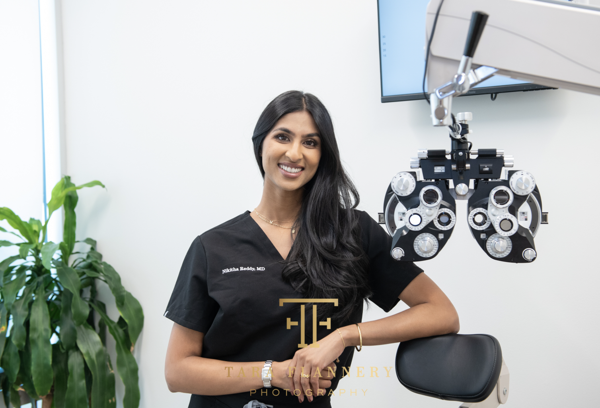

Premium IOLs
Multiple focal points built into a single lens allow simultaneous near, intermediate, and distance vision. Many patients achieve complete glasses independence — reading a menu, working on a computer, and driving, all without ever reaching for glasses.

Understanding Multifocal IOLs
A multifocal intraocular lens uses a diffractive ring pattern etched onto the lens surface to direct incoming light simultaneously to multiple focal points — typically near (reading), intermediate (computer), and distance (driving). Unlike the natural lens, which changes shape to focus at different distances, a multifocal IOL achieves this across all distances at once, and the brain learns to use the correct focal point for each task.
Modern multifocal IOLs such as the PanOptix trifocal and TECNIS Multifocal represent a significant advance over earlier generations. They deliver impressive near and distance results with a high rate of complete glasses independence. At Soni Vision Institute, careful patient selection is the key to excellent multifocal outcomes — we take the time to ensure this lens matches your eye anatomy and your lifestyle.
A single implant addresses all three visual zones — allowing most patients to read a book, use a phone or computer, and drive without glasses.
Clinical studies show that the majority of appropriately selected multifocal IOL patients achieve complete spectacle independence for their daily activities.
Modern multifocal platforms distribute light more efficiently across focal zones, improving near performance without significantly compromising distance quality.
Once implanted, a multifocal IOL requires no maintenance, no adjustments, and no replacement — delivering lasting visual freedom for the rest of your life.
The Process
Excellent multifocal outcomes begin with thorough planning and honest conversations about expectations. Here is how we approach every multifocal case.
We begin with a detailed conversation about your daily visual demands — how you use your eyes at near, intermediate, and distance — and your tolerance for occasional halos or glare at night. This honest discussion guides every lens recommendation we make.
Advanced optical biometry measures the dimensions and refractive power of your eye with precision. We also assess corneal topography, pupil size, and macular health — all critical factors in predicting how well a multifocal IOL will perform in your eye.
Your multifocal lens is implanted during cataract surgery using our outpatient technique. The procedure typically takes under 20 minutes. You return home the same day and rest for the afternoon.
The brain requires time to adapt to multifocal optics — typically 4 to 8 weeks for the neuroadaptation process to optimize all focal zones. Most patients notice progressive improvement in near clarity throughout this period, with excellent vision across all distances once fully adapted.
Common Questions
Honest answers to the questions patients ask most before choosing a multifocal IOL.
The most commonly reported side effects are halos and glare around lights at night — a natural consequence of the diffractive ring optics that make multifocal IOLs work. For most patients, these are mild and diminish significantly over the first few months as the brain adapts. Patients with very large pupils, irregular corneas, or significant dry eye may experience more noticeable symptoms. We take these factors into account during your evaluation and will be straightforward if a multifocal IOL is not the right choice for your eye.
Good multifocal candidates typically have healthy corneas, no significant dry eye, no macular disease, and realistic expectations about the adaptation period. Patients who are highly motivated to be glasses-free, who are comfortable with the possibility of mild nighttime halos during the adaptation phase, and whose lifestyles require versatile vision across all distances tend to achieve the best results. Patients with prior corneal refractive surgery (LASIK or PRK) require additional evaluation before being considered candidates.
Distance and intermediate vision typically stabilize within the first two to four weeks after surgery. Near vision and neuroadaptation — the process by which the brain learns to seamlessly select the correct focal point for each task — generally reaches its full potential between four and eight weeks post-surgery. Most patients report progressively improving near clarity throughout this period. By three months, the vast majority of multifocal IOL patients are fully adapted and enjoying the glasses freedom they were hoping for.
Schedule your evaluation with Houston's highest-rated surgical team.